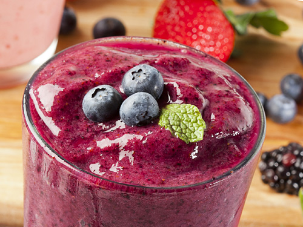

Mixed Berry Smoothie
3 minutes
4 Servings
Ingredients
- ½banana
- 1cup frozen mixed berries
- 1cup milk
Directions
- Slice 1 banana and add it to the blender.
- Add 1 cup of frozen mixed berries.
- Add one cup of milk.
- Use the ice-crush setting on the blender, and blend until smooth. Add more milk if needed.
- Enjoy your delicious smoothie!
Chef's Note
Such a refreshing treat on a hot summer day! I make this smoothie almost every day.